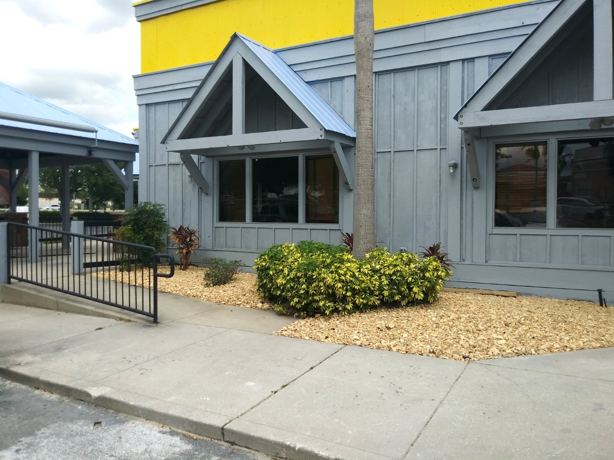
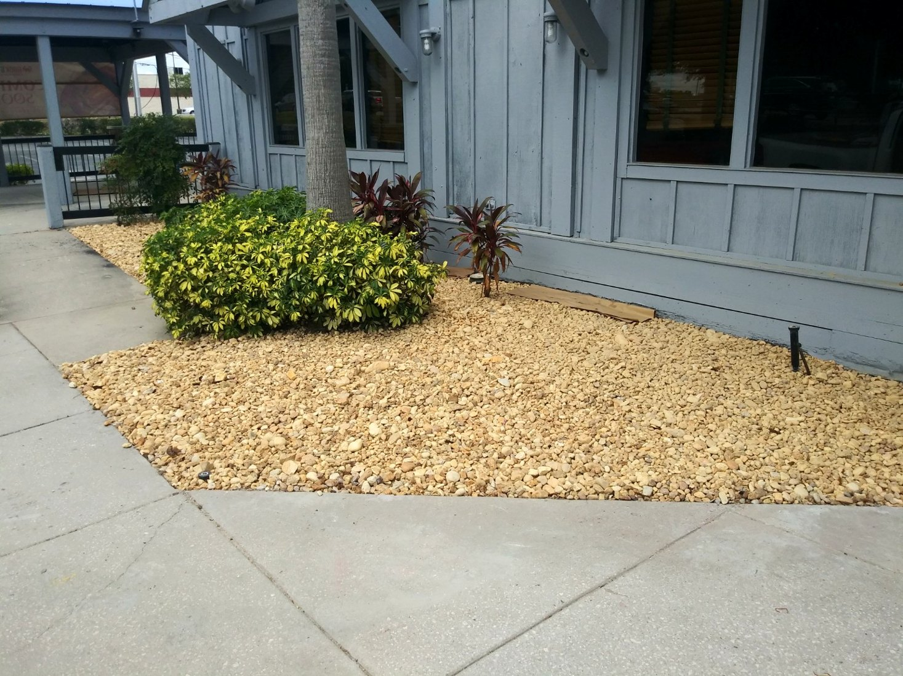
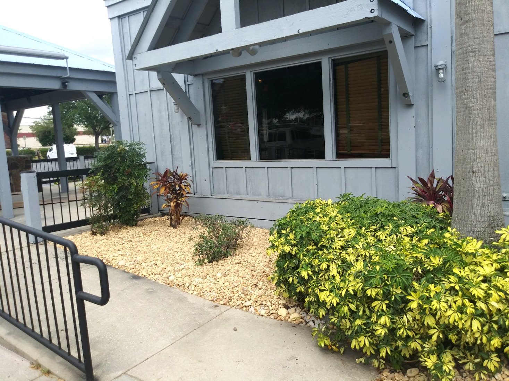

LANDSCAPES MADE TO IMPRESS
BEAUTIFUL OUTDOOR SPACES.
Thoughtful landscape design, expert installation, and dependable property care — bringing fresh life to the spaces around us.
Fictional business concept showcasing a landscaping website design.
 TROPICAL LANDSCAPE INSPIRATION
TROPICAL LANDSCAPE INSPIRATION✦ DETAIL-FOCUSED DESIGNOutdoor spaces with purpose
✓ PROPERTY CAREClean, well-kept landscapes
✦ RESIDENTIAL & COMMERCIALFlexible service concepts
♣ TROPICAL STYLEInspired by Florida greenery
WHAT WE DO
COMPLETE LANDSCAPE SOLUTIONS
A service lineup designed for a professional landscaping company, from routine upkeep to transformative outdoor improvements.


INSTALLATION & ENHANCEMENTS
Decorative stone, plantings, pathways and outdoor upgrades.
EXPLORE SERVICE →IRRIGATION & WATER MANAGEMENT
Water-wise planning, sprinkler systems and drainage solutions.
EXPLORE SERVICE →Service photographs are stock inspiration, not projects completed by the fictional Verdant business.
REAL-WORLD EXPERIENCE
COMMERCIAL LANDSCAPE INSTALLATION
Hook & Reel restaurant · Florida
A commercial installation featuring decorative stone beds, ornamental shrubs, and tropical plantings to enhance the property's exterior.
This work was completed by Roger Fifield through his former landscaping business. It is included as real project experience within this fictional website design demonstration.




A SMARTER WAY TO SHOWCASE YOUR WORK
DESIGNED FOR THE LANDSCAPE INDUSTRY.
Great landscaping deserves a website that looks just as professional. This demonstration shows how a contractor can present services, highlight real projects, and make it easy for visitors to request a quote.
The Verdant name, service offering, and inquiry experience are fictional; the commercial project photographs are authentic.
SEE THE DEMO FORM →YOUR NEXT PROJECT STARTS HERE
REQUEST A FREE ESTIMATE
See how a simple, professional estimate form can help a landscaping business turn visitors into inquiries.
DEMONSTRATION ONLY — This form does not send, save, or process any information. Please do not enter sensitive personal information.
PHOTOGRAPHY & CREDITS
Free stock inspiration photographs: Duc Van, Antonio Araujo, Adrien Olichon, and Ari Dinar, under the Unsplash License. Stock images are illustrative, not completed Verdant projects. Authentic commercial installation photographs provided by Roger Fifield.